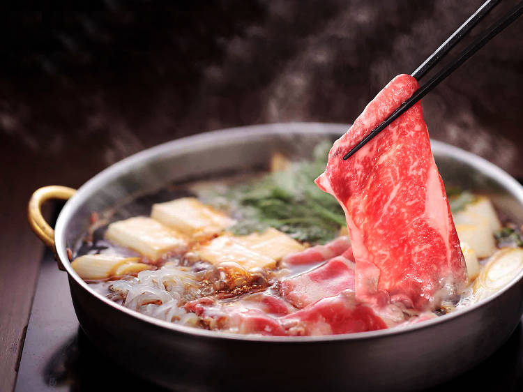

6340011024 Jiraphinya Naunnim
Shabu

ส่วนผสม
- ปลาโอแห้ง หรือปลาคัตสึโอะ
- สาหร่ายคอมบุ หรือเห็ดหอมแห้ง
- เหล้าสาเก
- เหล้ามิริน
- น้ำตาลทรายแดงป่น
- ซอสถั่วเหลืองญี่ปุ่น (คิคโคแมน)
- น้ำเปล่า
วิธีทำ
- ใส่น้ำเปล่าลงในหม้อ (ปริมาณขึ้นอยู่กับความเข้มข้นที่ชอบ) นำขึ้นตั้งไฟต้มจนเดือด
- ใส่เนื้อปลาโอแห้งลงไป ต้มต่อ 2 นาทีจนเริ่มเดือดแล้วตักเนื้อปลาออก
- ปรุงรสด้วยซอสถั่วเหลืองญี่ปุ่นและน้ำตาลทรายแดงป่น คนให้เข้ากัน จากนั้นเติมเหล้าสาเกและมิรินลงไปคนให้เข้ากันอีกครั้ง ชิมรสให้ออกหวานและเค็มตามชอบ เตรียมไว้
Nutrition Facts
| Nutrition |
| Servings:4 | |
| Amount per serving |
| Calories | 101 |
| %Daily Vale |
| Total Fat 3.6 g | 5% |
| Saturated Fat 0.5 g | 3% |
Comment